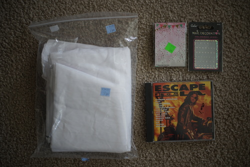

I've been trying to optimize midnight photoshoots.
I tried adding diffraction grating in front of my lens. Silly me forgot diffraction doesn't look particularly interesting in nearly monochrome situations. It does add a good ghosty look, but much more color is needed for the full effect!

I tried taking some with my 75-200mm zoom lens. It really didn't work out and he fell over twice so I called it quits for the evening. Wide open at f/4.6, the minimum ISO it would choose was 6400.

I tried with Cheby as well back on the 50mm f/1.4. It still wouldn't drop under 6400 ISO. The harsh lighting really took the contrast out of his face and he looks strangely vulnerable.


The feel like the shots in blog 196 were better and I can't remember how to recreate them. I was able to keep the ISO at 100 without having to use a tripod somehow. Only the first 2 of those 5 photos were taken using a tripod and I was surprised when I tried it off the tripod that it worked so well! Maybe it's the white background that is making the difference to the ISO choosing function.

Persona 3 Portable and Persona 4 Golden for Switch arrived the other day. I bought them from LRG a few months ago.
I still have a ton of games I haven't started and even a few I haven't opened. I almost finished Pokemon Arceus, but there's just so many things I want to do more!!
I don't feel too guilty about buying these two even if I don't play them. They both have the Japanese audio and I never owned a physical copy of P3P. Both of these games are in my 3x3!!!
Someone is going to have to tell me how great Unicorn Overlord is because I shouldn't buy it.
Ryan told me to take a hike (because it was very pleasant outside) so I have a small haul too
maybe 3 yards. feels like a poly blend. no one chopped any pieces from it (yet)